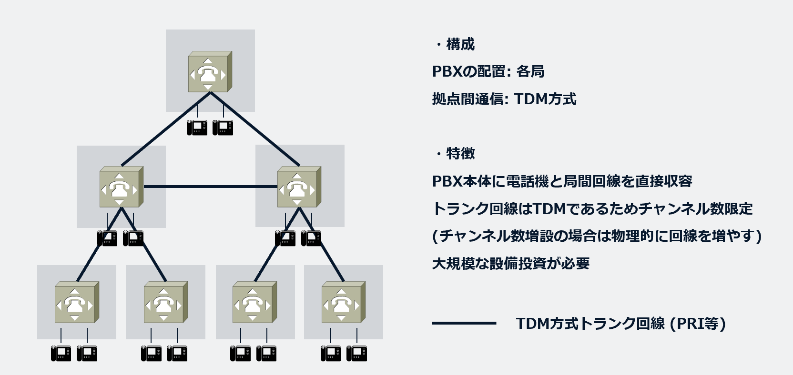
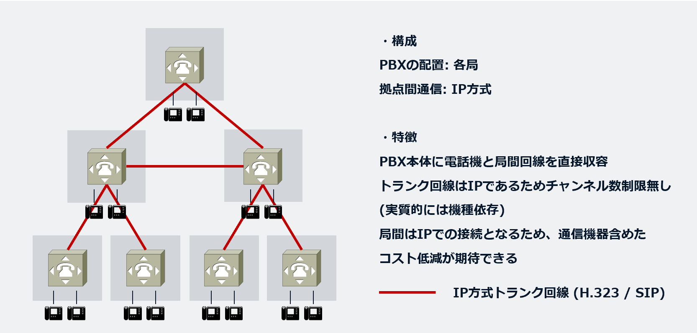
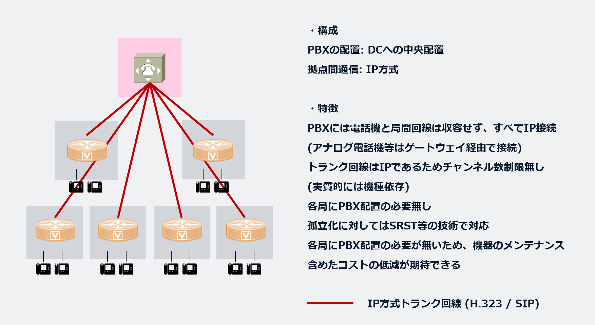

📜 PBX（Private Branch Exchange：構内交換機）の歴史
PBX（Private Branch Exchange：構内交換機）の歴史は、通信技術の進化とともに大きく変遷してきました。以下に3つの時代区分に沿ってその歴史をまとめます。
🕰️ 1. レガシー時代
レガシーPBX時代は、主にアナログPBXやデジタルPBXが主流だった時期を指します。この時代は、電話回線の物理的な接続と交換が中心でした。
- 各局にPBXが存在: 企業や拠点ごとに物理的なPBX装置が設置されていました。これにより、内線通話や外線との接続が可能となります。初期のPBXは手動交換システムでしたが、技術の進歩により自動化が進みました。
- TDMによるトランク接続: 拠点間の通信や公衆電話網（PSTN）との接続には、TDM（Time Division Multiplexing：時分割多重）方式のトランク回線が用いられました。TDM PBXは物理的なスイッチを使用してコールをルーティングし、専用の回線を必要としました。
特徴: 大規模な設備投資が必要で、維持管理にも専門知識を持つスタッフが求められました。 デジタルPBXの登場により、内線通話、転送、ACD（自動着信呼分配）などの高度な機能が利用可能になりました。

📞 2. VoIP時代
2000年代に入ると、IP電話の普及とともにPBXも大きな転換期を迎え、VoIP（Voice over Internet Protocol）技術が導入され始めました。
- TDMトランクのIP化: 従来のTDMによるトランク接続は、H.323やSIP（Session Initiation Protocol）といったプロトコルを用いたIPトランクへと移行しました。これにより、音声データがインターネットプロトコル（IP）ネットワークを介して送受信されるようになります。
- H.323とSIP: 1990年代後半には、LAN上での音声・動画像・データ通信の信号方式を標準化したH.323勧告をベースにVoIPシステムが始まりました。 その後、より柔軟で拡張性の高いSIPが電話サービスを提供するための標準仕様として注目され、IP-PBXの普及を加速させました。
メリット: IP-PBXの導入により、機器や設定の柔軟性が向上し、通信コストの低減が実現しました。

☁️ 3. CUCM時代
VoIP技術の成熟とネットワークインフラの発展に伴い、PBXの機能はデータセンターに集約され、より高度な集中管理が可能になりました。Cisco Unified Communications Manager (CUCM) は、この時代の代表的なソリューションの一つです。
- PBX機能のDCへの集約: CUCMのようなシステムでは、PBXの主要機能がデータセンター（DC）に集約された「集中サーバによる制御が可能なコミュニケーションサーバ型」のアーキテクチャが採用されます。 これにより、各拠点に高価なPBX装置を設置する必要がなくなり、管理の一元化と運用コストの削減が図られます。
- 各局へのVG設置: 各拠点には、既存のアナログ電話機や公衆電話網（PSTN）回線をIPネットワークに接続するためのVoice Gateway（VG）が設置されます。VGは、音声信号の変換やルーティングの役割を担います。
- SRSTによる呼制御: ネットワーク障害などにより、各拠点とデータセンターのCUCMとの接続が途絶した場合、拠点が孤立することを防ぐためにSRST（Survivable Remote Site Telephony）機能が活用されます。SRSTは、VGに搭載された簡易的な呼制御機能で、CUCMとの接続が失われた際に、その拠点内の電話機やPSTNへの発着信を継続させることができます。これにより、災害時などにおける通信の可用性が確保されます。

📘 まとめ
PBXの歴史は、物理的な交換機からIPベースのソリューション、そしてデータセンターに集約された集中管理型へと進化してきました。この変遷は、通信技術の進歩とビジネスニーズの変化に密接に関連しており、特にVoIPとCUCMのような集中型コミュニケーションプラットフォームが、現代の企業通信において重要な役割を担っています。